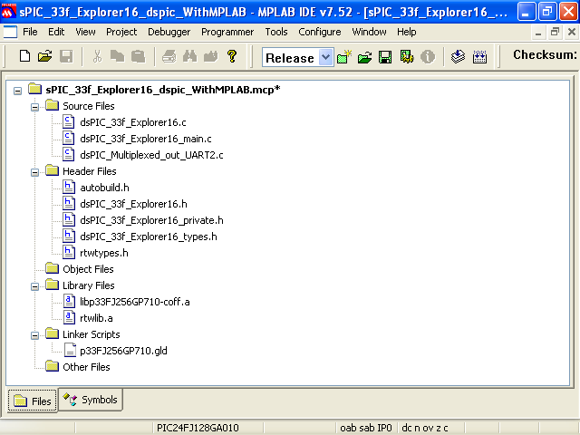
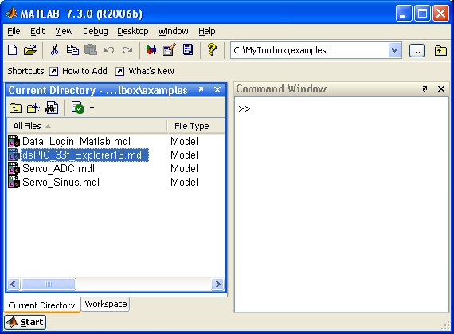
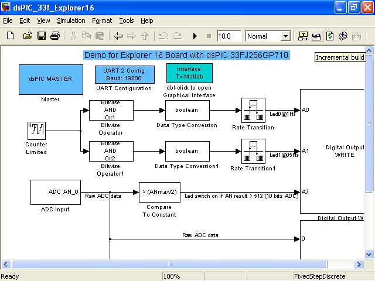
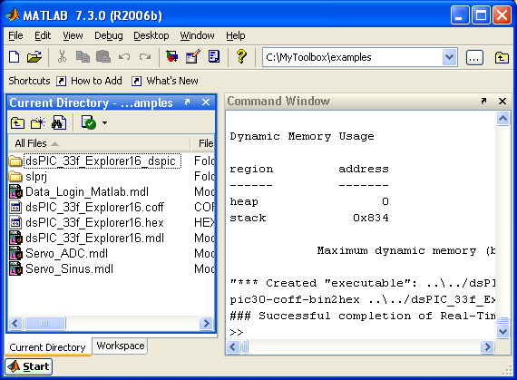
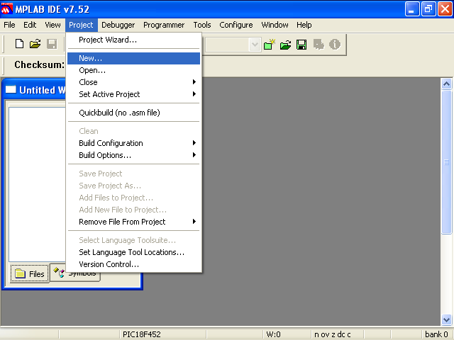
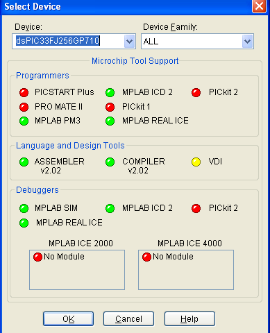
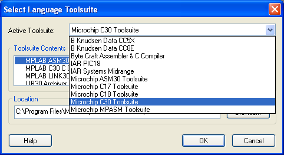
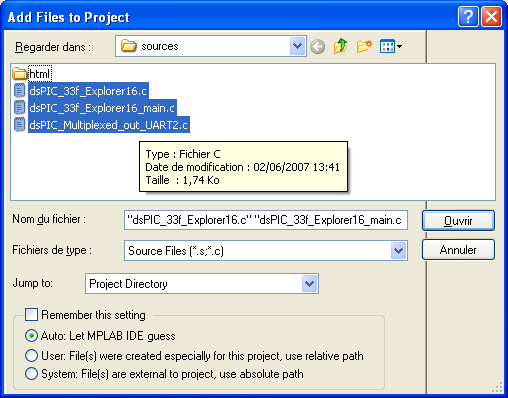
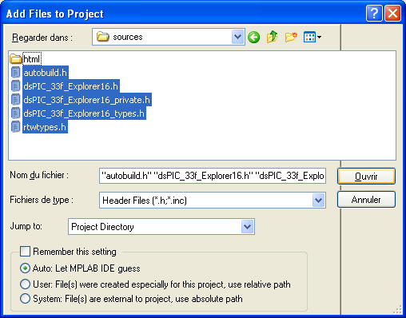

|
This example explain how to import the C code files, generated with simulink and the dsPIC blockset, into a MPLAB project. This allow to add or modify C code generated and to debug the software using the MPLAB deugging capabilities.
For the demonstration, I use the simulink model described in the previous example (for Explorer 16 Development Board with the dsPIC 33FJ256GP710 or PIC 24JF128GA010 microcontroller) .
The model file is in the toolbox directory : examples \ dsPIC_33f_Explorer16.mdl
This method do not use the new MPLAB function to import C code from simulink.
In Matlab/Simulink
-
Open model
-
Compile the model
The model must be compiled to get the matlab lirary compiled so as to import them easily in MPLAB.
Subdirectory dsPIC_33f_Explorer16_dspic \ Source will be created with .C and .h source files
In MPLAB
-
Create a new project
-
Select the target device
The same as the one defined in the simulink model : 33fJ256GP710
-
Select Language Toolsuite
Use the C30 Compiler ( free student version available on the microchip website)
-
Import C sources files (from *Toolbox* \ examples \ dsPIC_33f_Explorer16_dspic \ Source )
-
Import h source files (from *Toolbox* \ examples \ dsPIC_33f_Explorer16_dspic \ Source )
-
Import Matlab library and PIC/dsPIC library :
all .a files in the *Toolbox* \ examples \ dsPIC_33f_Explorer16_dspic \ Source directory
The .a library corresponding to the PIC in the Microchip directory ==> C:\Program Files\Microchip\MPLAB C30\lib
for 24f pic, use the 24Fxxx file ( I use the coff version)
-
Import Linker file for the chosen PIC/dsPIC
from the microchip directory : C:\Program Files\Microchip\MPLAB C30\support\gld
-
Compile
 |
Needed Files imported into the MPLAB project |
Remarks :
Know bug
Illustrations were realized using MPLAB 7.52.
with MPLAB 7.60 and get the following message during the compilation process:
"A language-plugin exception occurred and was logged"
It seems to be an MPLAB error. Refere post about this error on the microchip forum.
My advice would be to use MPLAB 7.52.
Reasons to compile with MPLAB rather than in matlab
No real reason ! I would not recommend to import C code files generated with simulink into MPLAB for the following reasons :
-
I is easier to maintain and improve code using simulink
-
Adding personnal C code can be done in simulink, either using the dsPIC block "call C function" neither using simulink options to import your C code ( refere to simulink manual)
-
Debugging should be done in real time without break points
-
Simulation with simulink could also help to debug
MPLAB should only be used if bug appears in the C code generated for peripheral ( If you find bugs in peripheral C code, please let me know)
MPLAB function to import Generated Code from Simulink
Since MPLAB IDE version 7.51 Matlab/Simulink support for Simulink embedded Coder is added.
This function allows to import C code generated with the Real Time Embedded Coder matlab toolbox. However, this function do not provide the blockset to get PIC and dsPIC peripheral working. You must generate code from simulink, import the C files into MPLAB and write the C code for every peripheral you want to use. You must also add C code to have the model to run at the correct frequency. In other words, you have still quite a lot of work to do once you generated you C code.
This function is today not compatile with the toolbox presented on this website. If you want to import generated code into MPLAB, you must use the procedure described on this wepage.
This procedure also allow a get a faster compilation than project imported using the MPLAB function.
Illustrations :
Matlab/Simulink
 |
Open Matlab and go to the example directory |
 |
Compile the Model |
 |
Compile process sucessfull |
In MPLAB
 |
Start new project in MPLAB |
 |
Select Device (Use same PIC as defined in the simulink model) |
 |
Select Language Toolsuite (select C30) |
 |
Add C source Files from directory : examples \ dsPIC_33f_Explorer16_dspic \ Source |
 |
Add C source Files from directory : examples \ dsPIC_33f_Explorer16_dspic \ Source |
|
Also add Library Files
rtwlib.a from directory ==> examples \ dsPIC_33f_Explorer16_dspic \ Source
lip33FJ256GP710-coff.a from ==> C:\Program Files\Microchip\MPLAB C30\lib
and Linker Script File
p33FJ256GP710.gld from ==> C:\Program Files\Microchip\MPLAB C30\support\gld
|
Then debug ?
For any question or unclear point, feel free to ask question on the forum.
|
The Microchip name PIC, dsPIC, and MPLAB are
registered trademarks of Microchip Technology Inc.
MATLAB, Simulink, and Real-Time Workshop are
registered trademarks of The MathWorks, Inc.
| Lubin Kerhuel 's Website |
Contact : [adresse e-mail retirée] |
|
|